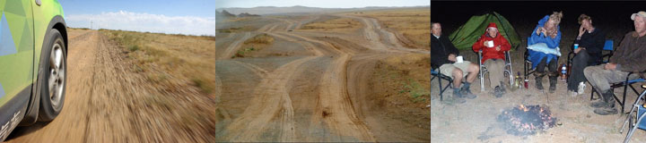
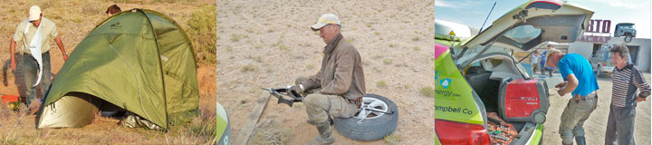
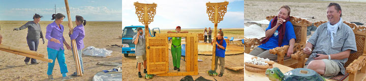
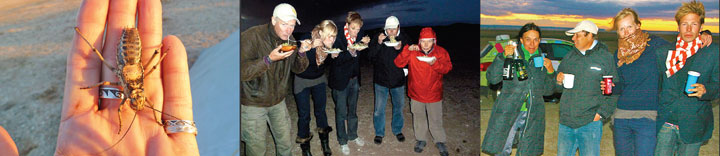
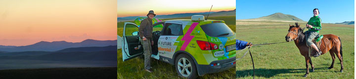

Regnen øser ned. Vejen er forvandlet til klæbrigt mudder med vandhuller. Her har jeg lejlighed til brillere med mine køreegenskaber. Når sandet er for dybt mister jeg fart. Samtidig går motoren ned i omdrejninger, det betyder at mine hjul aldrig spinder rundt eller graver sig ned. Dækkene holder også godt fast, så jeg kommer stille og roligt igennem sand og mudder og over de stejleste bakker. Også løst støv klarer jeg.
I den øde ørken må jeg at lade på generatorstrøm hver nat, og jeg bliver nervøs når generatoren svigter. Jeg glæder mig rigtig meget til at få strøm fra den lille vindmølle som Telos Energy har lovet mig, når jeg kommer til Danmark.
Hilsen fra Grønne
Sommeren er forbi, efteråret er begyndt. I den kolde morgen skilte vi generatoren ad og fjernede den iturystede lydpotte, så vi igen kunne lade Grønne - ellers var vi strandet. Gobi ørkenen er en del anderledes end nogen i elbil-teamet havde forestillet sig. Der arbejdes på den nye vej helt fra Ulan Batar til den kinesiske grænse. Et gigantprojekt med store stenbrud og maskiner til flytning af enorme mængder materialer. Når vejen er færdig bliver det ikke det samme at køre igennem Mongoliet. På jernbanen kører tog med kul med få minutters mellemrum. Telefonpæle og højspændingsledninger følger jernbanen. Mellem disse løber de opkørte bilspor som er hovedvejen til Kina.
Hjalte samlede kamelgødning til et bål som holdt os varme aftenen igennem.
Nina
 Siden grænsen til Mongoliet har der ingen forbindelse været til vores GPS, som kan fortælle jer hvor jeg er. Jeg, Den Grønne Bil, vil gerne fortælle, at uden dem var det aldrig gået. Uden dem var jeg ikke kommet helskindet henover Ruslands hullede veje eller Mongoliets sandede ørkenspor. I har sikkert allerede gættet at det er dækkene fra Continental jeg snakker om. De står godt fast, og alligevel føler jeg mig let til bens. Nina og Hjalte kører forsigtigt, alligevel sker det at mine fjedre går i bund. Så råber Nina Åh-Åh Åh. Hvis Hjalte kører for hurtigt er hun ved at træde fødderne gennem bunden. Og når batterikassen under mig rammer noget, skriger hun AV! Jeg kan godt lide afveksling. Sand viser hvad jeg kan.
Siden grænsen til Mongoliet har der ingen forbindelse været til vores GPS, som kan fortælle jer hvor jeg er. Jeg, Den Grønne Bil, vil gerne fortælle, at uden dem var det aldrig gået. Uden dem var jeg ikke kommet helskindet henover Ruslands hullede veje eller Mongoliets sandede ørkenspor. I har sikkert allerede gættet at det er dækkene fra Continental jeg snakker om. De står godt fast, og alligevel føler jeg mig let til bens. Nina og Hjalte kører forsigtigt, alligevel sker det at mine fjedre går i bund. Så råber Nina Åh-Åh Åh. Hvis Hjalte kører for hurtigt er hun ved at træde fødderne gennem bunden. Og når batterikassen under mig rammer noget, skriger hun AV! Jeg kan godt lide afveksling. Sand viser hvad jeg kan.
Hilsen Grønne
Det stormede om natten så teamets tre telte lagde sig ned. Midt på natten gik generatoren i stykker. Da dagen gryede sad vi i stormen med for lidt strøm på Grønnes batterier, og ingen stikkontakter indenfor rækkevidde. Var det nu vi skulle have elbilen trukket af kameler? Der var ikke lige nogen kameler i nærheden, så vi måtte bruge den næstsidste strøm på at køre tilbage for at få generatoren repareret. På vejen ramte Grønne noget jernskrot så det højre bagdæk blev snittet helt igennem. Vi ville have købt et nyt dæk men 17 tommers fandtes ikke i Shainshan. Hjalte fik lappet dækket så godt det lod sig gøre og lagt en slange i. Hjalte og Mudgi, vores gode chauffør fandt en mand med et gammel svejseapparat og et par solbriller. Generatorens lydpotte blev lappet sammen. Da vi skulle køre opdagede Claus at højre fordæk også var skadet. Vi kørte ud i ørkenen på den sidste strøm med to lappede dæk - ikke godt. Det stormede da vi slog lejr. Generatoren blev sat til, og gik straks efter i stykker igen. Fortsættelse følger...
Nina
 Fra Sainshand hvor vi spiste og købte ind blev det sjovt at køre. Ingen vej, kun et virvar af spor over vaskeriller, dybe huller, sand, sten og støv. Temperaturen var 34 grader. Grønne og følgebilen forlod sporet og kørte ind til et lille højdedrag. Aftenen I ørkenen var lun og stille . Æblemost og Vodka blev blandet til ævlebævle, og teamet filosoferede over livets gang. Vi krøb i teltene i den kulsorte nat klokken halv ti. Fra Sheishan hvor vi spiste og købte ind blev det sjovt at køre. Ingen vej, kun et virvar af spor over vaskeriller, dybe huller, sand, sten og støv. Temperaturen var 34 grader. Grønne og følgebilen forlod sporet og kørte ind til et lille højdedrag. Aftenen I ørkenen var lun og stille. Efter spaghettien blev Æblemost og Vodka blev blandet og teamet filosoferede over livets gang. Vi krøb i teltene i den kulsorte nat klokken halv ti.
Fra Sainshand hvor vi spiste og købte ind blev det sjovt at køre. Ingen vej, kun et virvar af spor over vaskeriller, dybe huller, sand, sten og støv. Temperaturen var 34 grader. Grønne og følgebilen forlod sporet og kørte ind til et lille højdedrag. Aftenen I ørkenen var lun og stille . Æblemost og Vodka blev blandet til ævlebævle, og teamet filosoferede over livets gang. Vi krøb i teltene i den kulsorte nat klokken halv ti. Fra Sheishan hvor vi spiste og købte ind blev det sjovt at køre. Ingen vej, kun et virvar af spor over vaskeriller, dybe huller, sand, sten og støv. Temperaturen var 34 grader. Grønne og følgebilen forlod sporet og kørte ind til et lille højdedrag. Aftenen I ørkenen var lun og stille. Efter spaghettien blev Æblemost og Vodka blev blandet og teamet filosoferede over livets gang. Vi krøb i teltene i den kulsorte nat klokken halv ti.
Nina
Langs jernbanen ligger mange miner hvor der graves efter kul og mineraler. Små nybyggerbyer er vokset frem. Vi får fyldt vores vanddunke i den sidste flække ved et vigespor inden vi fortsætter ud i ørkenens støv og sand. Fra højdedragene er der udsigt til alle sider. Her er færre husdyr og færre mennesker. Det vil vare fire dage inden vi igen når frem til en butik og en tankstation. Hjalte og jeg skiftes til at køre. Vi prøver at undgå at sidde fast i sandet, eller at bilens bund støder på. Grønne klarer det flot, og dækkene fra Continental står fast på både græs, sten, grus, klipper, mudder, sand og støv. Ikke en eneste gang har vi mistet vejgrebet. Nu efter mere end 11.000 kilometer er dækkene stadig så gode som da de var nye.
Nina

Først besøgte vi en fattig familie i en lille ger (mongolsk telt). Så blev vi overhalet af en bilkortege med Mongoliets præsident. Derefter hilste vi på den amerikanske ambassadør på en tankstation. Senere blev vi jaget væk fra pladsen foran rådhuset i Choir fordi bygningen af en ny vej blev fejret. Den gamle asfaltvej sluttede og vi kørte videre ud i landskabet. Grusvejen var afmærket med blå flag som førte os til en stor smuk ger der var ved at blive pakket sammen. Folkene fik lynhurtigt sat os i præsidentens stol, og bordet blev trukket frem igen. Skraldgrinende serverede de resterne af præsidentens brød og ostekiks for os imens vi skiftevis sad i stolene og fotograferede hinanden.
Nina.
Sukhee havde skaffet en følgebil med chauffør, som vil køre med os til den kinesiske grænse. Karen Elise havde købt ind, og snart var vi ude af byen. Kæmpestore øde landskaber åbnede sig for os. Vi så få mennesker og mange dyr: Græshopper, heste, køer, får, geder og kameler. Vi slog lejr på en slette mellem lave bakker og dramatiske skyer. På jorden lå interessante stenarter, månesten måske? Afrejsen blev fejret med spaghetti og russisk champagne, inden vi krøb i læ for den isnende vind.
Nina

Elbil-teamet bestående af Morten og (Den anden) Nina, Claus, Karen Elise, Hjalte, og mig, samles ved morgenbordet. Vi har nogle ærinder vi skal nå at ordne inden vi kører videre i morgen. Det hurtigste er at tage til centrum med taxi eller bus. Hjalte og jeg får vekslet penge, set kæmpedinosaurerne på det naturhistoriske museum, og sendt et brev. Sammen med Nina kører vi til et fabriksudsalg for Cashmere-uld. Vi kommer hjem med tre trøjer, et halstørklæde og et par sokker strikket af verdens blødeste Cashmere-uld. Om aftenen spiser Hjalte og jeg på restaurant sammen med Moto Mundos mongolske samarbejdspartnere Sukhee og Gantulga. De er Mongoliets bedste racerkørere, og rigtig fine fyre. "Det I gør er fremtiden, siger Gantulga, og med jeres erfaring skal i nok komme i mål!"

Søren Ekelunds elbil-konstruktion fungerer perfekt. Men delene som kommer fra forskellige andre fabrikanter skal være mere solide. Bilerne har været udsat for ekstreme temperaturer og forfærdelige veje, fulde af huller. De svage led i kæden er skånselsløst blevet afsløret. Men alt i selve elbil-konstruktionen er godt gennemtænkt, Derfor har Søren til enhver tid kunnet regne ud hvad der var i vejen, hvis vi havde et problem. I går stod vi på et øde bjergstrøg, med 0 % strøm tilbage. Generatoren blev sat til at arbejde, men slukkede hele tiden fordi Grønne sugede for meget strøm. Og når Hjalte skruede ned for strømstyrken nægtede bilens ladere at tage imod. En telefonopringning til Søren løste problemet, og nu lader Grønne bedre end nogensinde.
Nina